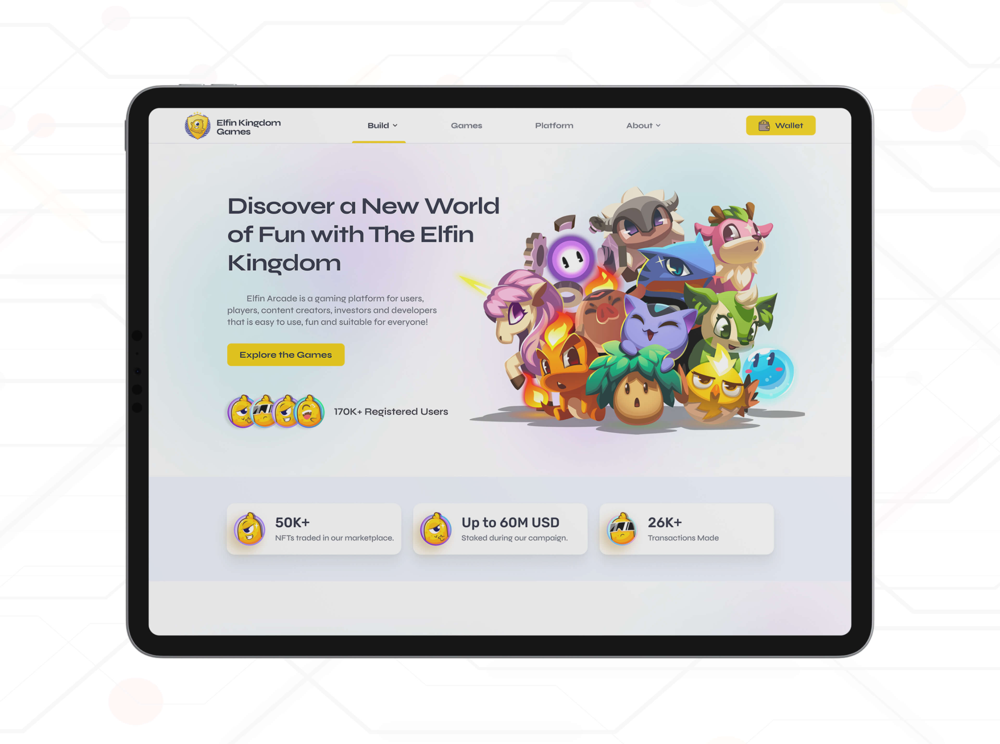

We’re already hip deep into 2026 and we can see some great UI UX Design trends in 2026 dominating screens. The design for your products or websites can be the difference between converting more users into customers, and getting no conversions at all. However, these design trends can help you supercharge your conversions and turn your user interface into a great experience for your customers.
In this blog, we’re going to take a journey through the top 10 UI UX design trends taking the world by storm. Plus, a few honorable mentions I think are going to get a lot more attention.
So, let's get started.
Latest UI UX Design Trends For Your Business To Maximize Your Conversions
I’ve prepared this list of UI UX Design Trends in 2026 after reviewing hundreds of websites and applications. Additionally, I’ve spoken to 30+ founders and even our own clients about how the market is reacting to these trends.
You will see that each trend tries to invoke some kind of emotion in the users and guides them to a desired outcome with minimal friction. Some trends might be a bit complex but create a deeper, more immersive experience for the users. If you’re a founder or a service provider looking to build new products or websites, these ideas should definitely be on your checklist.
Top Attention-Grabbing UI UX Design Trends in 2026:
If you remember from a couple of years ago, lots of web designers added 3D objects to their web pages. However, these were just static websites and you couldn’t really interact with these 3D objects. Now, web design is moving towards more immersive experiences.
Technologie like WebGl and three.js, you can now include interactive 3D scenes inside your website. This is a great advancement for your web designs because now the control of the user experience is in your hands. This is one of the biggest UI UX Design Trends in 2026. You can design highly interactive experiences for your users where you can curate their journey on your app or website.
When you thought about apps a few years ago, you thought about a good interface that gets the job done without any bugs. User experience was about removing friction for the users and allowing them to reach their goals faster. However, now it's all about personalization.
You might have already noticed that there’s a lot of focus on content localization. Another interesting topic among the UI UX Design Trends in 2026. Simply put, there’s a lot of emphasis on making the user as comfortable as they can be when using your apps or websites. Similarly, with Location-Based, your user experience will be highly user-centric. This includes understanding the user’s persona, where they are geographically, and what their preferences are.
A great example for this is how you position your call to action buttons. Most English speakers would read a page from left to right. So, you would put your call to action buttons on the right side of the page. You might be wondering why this is one of the UI UX Design Trends in 2026. Think about this, if your users are from an Arabic-speaking country, they might prefer reading the page from right to left. In this case, you will get better results if you put your call to action buttons on the left hand side of the page.
This is a design trend that is really hyped and you can see many SaaS applications using it. Glass Morphism is a unique style of design where you implement glass-like on page elements into your UI. This is often the go-to style among UI/UX designers and one of the more unique UI UX Design Trends in 2026.
If you really want to push the boundaries then Brutalism might be just what you’re looking for. This is an unconventional approach to UI/UX design and takes inspiration from architecture brutalism.
This approach is a bit controversial and is characterized by stark and raw aesthetics. It's controversial because most designers swear to a clean and structured UI Design. Many fashion brands are drawn to this style of UI/UX design because it is so unique. If you’re designing user experience for a fashion or lifestyle brand, then Brutalism could be a great option among UI UX Design Trends in 2026.
Maybe you’re a fan of realism and the aesthetics of real world objects. Then look no further, Skeuomorphism is the answer. You’ve probably seen this style in many mobile apps where the design incorporates elements that look like real world objects. A good example would be on-page buttons that look like real life buttons of devices. If you add some sound effects and haptic feedback to you, you can really create a good experience for your users.
I expect Skeuomorphism to be a top contender in the UI UX Design Trends in 2026. However, its aesthetic will be different from what it used to be. Instead of just adding realistic elements to your UI, recent trends suggest that designers are using a mixture of flat designs and Skeuomorphism. This method adds a feel of depth to otherwise flat designs and you can really liven up the user experience of your apps.
The first thing that you notice when you enter a website is the hero section. Most web designs include a rectangular hero section with a value proposition as the copy. A deconstructed hero section is a unique pick within the UI UX Design Trends in 2026 where designers use bold typography, unaligned images, and content snippets.
This style helps you draw the attention of your users and when you couple that with great sales copy, you have a high converting hero section in your hand. Additionally, this is a style that users don’t usually expect which means that you can make use of their curiosity and create a curated user experience for them.
Everyone’s talking about data and for good reason. The world as we know it today runs on massive amounts of data. This is the reason Data Visualization has become a notable style in the UI UX Design Trends in 2026.
You can use this style to effectively communicate complex datasets through stunning yet easy to understand visual elements. These could be graphic charts , images, interactive maps, and counters. There are unlimited possibilities if you think about it.
You can deny that there are too many devices and screen sizes to choose from right now. This also means that your design has to be highly responsive if you want them to look good on all devices.
Because of this, you can’t talk about the UI UX Design Trends in 2026 without talking about Bento Grids. This style of design is complex where you use grid layout with smaller elements that are created to be flexible and responsive. Many designers use this style when designing SaaS apps, social media apps, productivity apps, and so on. Although the design is complex, what you see visually are crisp and easy to understand. This works well for the user experience because the user gets all the information they need in a simple and visual format.
This was inevitable if you think about it with Apple launching their Vision Pro, Meta launching their Quest Pro, and whatnot. A list for UI UX Design Trends in 2026 can never be complete without talking about virtual reality and mixed reality.
Designing for spatial design means that you have to understand a lot about the human mind and how you can grab attention. When someone is wearing a VR or MR headset, they will expect a highly immersive user experience. This includes understanding how gestures work, how human eye movements work, and so on. Considering how fast the technology is moving, I expect that we’ll see a lot of products built around this.
I kept this for last but creative cursors are also one of the biggest UI UX Design Trends in 2026. A big reason designers, or should I say, marketers prefer this technique is because you can keep users on your app or website for longer times. This increased user-retention can help you rank on Google, make the user experience more interactive, and it honestly looks very cool.
If you’re thinking that this is just a visual aid that makes things look more flashy, then you might be surprised. You can use cursors creatively and enhance the user experience by making them interactive and aligned to your user journey.
Great UI Design trends for 2026 for attracting more users
Now that we’ve covered the hits of UI UX Design Trends in 2026, let's look at some honorable mentions for UI Design. These didn’t make it to the main list but you can deny that they’re really useful. And sometimes you can use them just because they look really good on screen.
If you’re selling digital products, then this technique will be really useful for you. Although not a new concept, you can see many software product landing pages and even some service based companies use it in their landing pages.

Although simple, this is one of the UI UX Design Trends in 2026 you can use to attract users. Moreover, showing a visual representation of the software you’re selling gives your users an idea about how the software will be when they buy it. You can even add animations that show how the software works.
A great thing about this technique is that it embraces your users’ choices. You can create dynamic pages for your websites, web apps, and mobile apps that automatically switch to a dark or white theme based on your users’ system preferences. Again, a very simple but one of the more powerful UI UX Design Trends in 2026. Your user experience will become more fluid and helps in providing more visual comfort to your users.
The best UX Design trends for captivating user journeys
If your objective is to launch an app for the masses, then you can’t go wrong with Android. When you hire a mobile app developer who specializes in Android, make sure that you find someone who has built apps for multiple device screens. Android is a big ocean to swim in because you have thousands of devices with different screen sizes and performance.
If you haven’t figured it out yet, know that data is everything and your data is everywhere. And, businesses use your data to personalize your experience when you use their products or services.
This one might look like a no-brainer but you’d be surprised how many businesses miss out on opportunities because they didn’t pay attention to personalization. You should be smarter.
Again, this might seem like a no-brainer but it's surprising how many websites and web apps have poor responsiveness. When you’re building anything on web platforms, your focus would fall on how the app or website looks on a web browser. This makes responsive design one of the biggest UI UX Design Trends in 2026. As humans, we’re inclined to think about it like this and we see mobile or tablet versions as an additional requirement.
But in reality, you’ll soon realize that most people browse the web on their mobile phones. This means that if you’re not focusing on how your apps will look on smaller device screens, you’re missing out on a large pool of potential customers.
Exciting Mobile app UI UX design trends dominating handheld experiences
We’ve already talked about lots of interesting UI UX Design Trends in 2026. Now, let's look at some mobile specific trends that will be useful for you. Like I stressed a minute ago, most of our population is already on smartphones. So, it will pay off at the end when you spend a little extra time making your mobile experience better.
The human experience is a combination of the 5 senses. While we’ve tried to go above and beyond to perfect digital experiences using these 5 senses, audio is something we use everyday.
This is why Voice User Interfaces are useful and one of the top UI UX Design Trends in 2026. You’ve probably used virtual assistants like Siri, Bixby, and Alexa. Sure, they are fun to use but I expect that we are going to see far more advanced tools moving forward that you can use in real time. Integrating voice commands into your user experience is also a great way of helping visually impaired users access your product and services.
But if you think this is just an additional feature that you can add, then you’d be wrong. This is not just one of the UI UX Design Trends in 2026. If you’re in the e-commerce industry for example, many countries like the US have laws that say that your website should be user friendly for the differently abled.
Some businesses even face legal troubles because they didn’t make their e-commerce website user friendly for visually impaired users. Currently, this means that your website should support accessibility tools like announcing on-screen items out loud. However, this could progress into including voice assistants as the technology moves forward. I think voice based user experience will be a very important one of the UI UX Design Trends in 2026.
Augmented Reality is one of my favorite UX design innovations because you use your phone's camera to do a lot of neat things. Most smartphones are very advanced today and can handle AR apps.
For example, if you have a real estate app that lists properties for rent or sale. You can include an AR experience where users can use their phone cameras to visualize your property in 3D and walk around it. This is a small example but there are endless possibilities and a must watch in the UI UX Design Trends in 2026.
Engaging Web app UI UX design trends that optimize user interactions
While mobile apps are in everyone’s hands, your web experience shouldn’t be far behind. Curating a great user experience for your web applications is crucial especially for sales conversions.
So, we’ll now look at some UX design trends that will help you create great experiences for the web.
Today, interest in technology is high and the attention span of your users is low. Users don’t expect web apps to be static and just “problem solvers” anymore. When you’re looking at the UI UX Design Trends in 2026, you can’t miss motion design.
You might have noticed that more and more web based applications are including animations on pages. This is to meet the high user demand for motion in web experiences. One of the most notable innovations here is the emergence of “Lottie” which is a lightweight and scalable file format you can use to add high quality animations to your web pages.
You’ve probably heard about gamification a lot over the past 5 years and it's a big gamechanger in the list of UI UX Design Trends in 2026. No pun intended. Gamification is not just about creating games. It's a technique used to turn normal app interactions into an inclusive experience where the user also has to perform certain tasks to achieve a result. In short, you incentivize users to engage in activities inside your web application.
If you properly gamify your web application, you can take your users on a very interactive journey where the incentive at the end will lead to an action that you desire. In other words, you incentivize users to use your web app and take them to a point where the next step is to pay for your product or service. Keep this in your mind when you’re looking for the best UI UX Design Trends in 2026.
Which Factors Influence UIUX Trends in 2026
When you’re talking about trends in UI/UX design, it's all about thinking from a user’s perspective. Most people are influenced by the things around them. This includes movies they watch, music they listen to, and yes, the apps that they use.
Most of us have been using Instagram for many years at this point. The concept of adding photos and videos as “stories” comes naturally to us. This turned into a trend because of mass adoption and many apps replicated it. It's worth mentioning that Instagram got this idea from Snapchat.
When you’re thinking about UI UX Design Trends in 2026, think about what you see around you. You can even take everyday activities and translate them into digital experiences. A great example for this is the concept of the move to earn. It combines the concepts of gamification, staying fit, and digitization to create an experience that users can immerse themselves in.
Ending things with a message
I hope that this blog has been helpful to you in understanding the top UI UX Design Trends in 2026. Great UI/UX design can dramatically change the way your users use and buy your products and services. However, it's important to understand that you should choose trends based on your needs. One trend might be visually appealing but might not align with what you’re looking to achieve. Always do your research before jumping onto any trend.
If this blog helped you out, make sure you share it with someone that might be able to use it.
Chief Design Officer
Hi, I'm Lokesh Murali. CDO - Chief Design Officer, responsible for all design and innovative aspects of a company's products and services. Collaboration is the key - direction, and recommendations on the design and development execution we collaborate as one. From designing, and ideating wireframes, to fabricating prototypes, and checking customer feedback, involving myself in the creative sector keeps my vibe for the era!